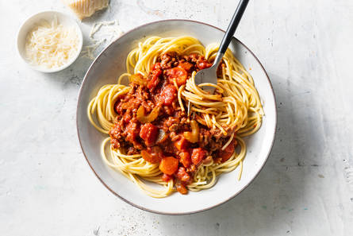

Recept voor: Spaghetti Bolognese

Omschrijving en geschiedenis
Bologna staat bekend om de zeer voedzame keuken en de saus is dan ook, in tegenstelling tot de meeste andere pastasauzen, behoorlijk gevuld. In de oorspronkelijke saus behoren tot de vaste ingrediënten: rundvlees (gehakt), pancetta (gedroogd varkensbuikspek), ui, wortel, bleekselderij, tomatenpuree, wijn en volle melk. De saus wordt klaargemaakt met boter of olijfolie en gekruid met nootmuskaat. In 1982 werd het authentieke recept door de Accademia Italiana della Cucina (de Italiaanse Culinaire Academie) bij de Bolognese Kamer van Koophandel gedeponeerd.
Ingrediënten
- 1 middelgrote ui
- 2 el milde olijfolie
- 1 el tomatenpuree
- 500 g rundergehakt
- 800 g tomatenblojes
- 300 g spaghetti
Bereidingswijze
- Snipper de ui. Schil de winterpeen en snijd in plakjes. Snijd de bleekselderij in boogjes. Verhit de olie met de boter in een pan, voeg de ui, peen en bleekselderij toe en bak 5 min. op middelhoog vuur. Voeg de tomatenpuree en het gehakt toe en bak in 5 min. rul.
- Voeg de bouillon en tomatenblokjes erdoor. Breng op smaak met peper en eventueel zout. Breng aan de kook en laat de saus met de deksel op de pan 30 min. op laag vuur sudderen. Roer af en toe.
- Kook ondertussen de spaghetti volgens de aanwijzingen op de verpakking. Verdeel de spaghetti over de borden en schep de saus erover.